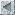
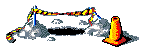

ImageMagick Examples -- Reference Index
- Index

ImageMagick Examples Preface and Index - IM Command Index
- Operator Options Index
- Setting Options Index
- File Formats Index
- Operator Options Index
IM Command Index
Under Construction

| Command | IM Example Reference... | |
Convert
| ||
Mogrify
| ||
Composite
| ||
Montage
| ||
Identify
| ||
Compare
| ||
Display
| ||
Animate
| ||
Conjure
| ||
Operator Options Index
Under Construction
Setting Options Index
Under Construction
| The setting types are basically defined as... | ||
| Op | Setting used by operators (incl. image creation) | |
| In | Overrides/Sets image meta-data during image read/create | |
| Out | Output format controls (including text output) | |
| Ctrl | Control the General working and debugging of IM | |
| See Types of Options for more details. | ||
File Formats Index
-
Common Image File Formats... gif:Graphics Interchange Format gif:GIF Animations jpg:Joint Photographic Experts Group Format png:Portible Network Graphic svg:Scalible Vector Graphic tiff:Tagged Image File Format ps:Postscript, Pre-formated Test pdf:Portible Document Format bmp:Windows Bitmap Most of these are detailed on the Common Image File Formats Examples Page
Also see the DIY Random Noise ImageCanvas Image Generators... gradient:Color Gradient Generator pattern:Builtin Tile Patterns Generator plasma:Plasma/Random Image Generator tile:Tiled Canvas Generator xc:Solid Color Canvas
Also see other text generation methods on the Text to Image Examples Page, such as Annotate for drawing text on images.Text Image Generators... caption:Word Wrapped Label label:Simple Text Label ps:Postscript, Pre-formated Test text:Multi-Line Text Files
Also see Special Image Formats.Special Use Image Formats... fd:File Descriptor Pipelines hald:Hald Color Lookup Table Generator histogram:Histogram Graph, (+ color counts) info:Image Identify Info miff:Magick Image File Format mpc:Magick Persistent (Disk) Cache mpr:Magick Program (memory) Register mvg:Magick Vector Graphic null:Null/Error Image show:Image on screen display (backgrounded) txt:Text Image (Pixel Color List) x:Image X window capture and display Other Image File Formats...
These are generally only looked as part of other examples.Network Portible Bitmaps (PBM,PPM) Misc Formats Resize Gradients, txt:Postscript (PS) Misc Formats ps:, Vector ImagesEncapulated Postscript (EPS) Misc Formats (also see postscript) MPEG & M2V Misc Formats Autotrace: SVG Output Raw Digital Camera Images (CRW,CR2,NEF,X3F,etc) Misc Formats PSD Misc Formats Windows Metafile Format (WMF) Misc Formats Macromedia Flash (SWF) Misc Formats DPX Misc Formats HTML Web Pages Misc Formats PCL Printing Format Misc Formats Kodak PhotoCD Format (PCD) Misc Formats Raw RGB data Misc Formats